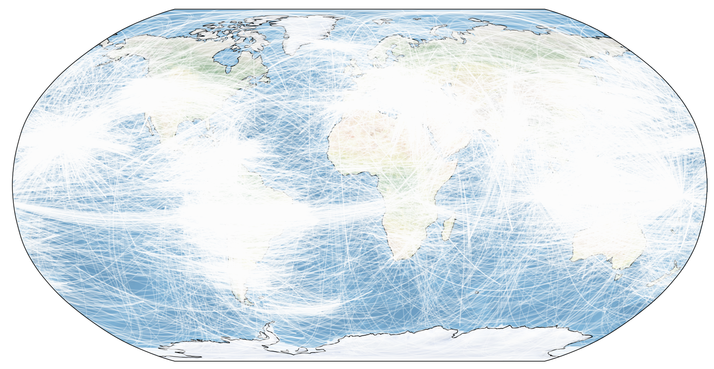

Figure Caption - A total number of
27.500 sections were exported through HADES. Each white line represents a single cross section served by the application. Illustration created on 2019-02-27.
HADES Changelog
Alpha 0.4.1 2019-04-05
- Added downloadable compressed database files on the information page that are supported by HADES. For instructions on how to use the database files refer to the GitHub repository.
Alpha 0.4.0 2019-03-01
- Fixed MITP08 showing an incorrectly mapped tomographic model.
- Added tomographic models HMSL-S06 and HMSL-P06 (Houser et al., 2008).
- Added tomographic models GYPSUM-S and GYPSUM-P (Simmons et al., 2010).
- Added tomographic model GAP-P4 (Obayashi et al., 2013 & Fukao and Obayashi, 2013).
Alpha 0.3.1 2019-02-28
- Reduced bandwidth usage by factor 10.
Alpha 0.3.0 2019-02-27
- Low resolution models sample 1 point per arc-degree and high resolution images 2 points per arc-degree.
- Performance improvements for small cross sections.
- Committed refactored server & client side code.
- Added overview figure showing usage details of the HADES application.
Alpha 0.2.0 2018-04-18
- Added SP12RTS-S and SP12RTS-P models (2x2).
- Added MITP08 model.
- Another attempt at fixing the SVG exporting.
- Polar view is now the default.
Alpha 0.1.1 2018-03-06
- Added option to show satellite terrain for bathymetry.
- Added toggle to show plate boundaries.
- SVG exporting for polar charts has been fixed.
Alpha 0.0.0 2017-11-11
- Initial release of HADES source code and application.